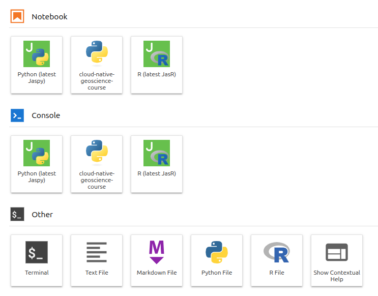

Summary and Schedule
Introduction
This lesson provides the preparation needed before the main Cloud-Native Architectures and Modern Data Formats for Geoscience course.
It includes three episodes:
- Shell basics for navigating files, editing text, and using help tools.
- Introductory xarray workflows for opening, slicing, plotting, and processing NetCDF data.
- Git and GitHub foundations for tracking changes, branching, and merging.
The goal is to ensure all learners begin the main course with a
shared baseline in command-line, Python data handling (using
xarray), and version control workflows.
And it also includes a setup guide for installing the required software and Python packages.
| Setup Instructions | Download files required for the lesson | |
| Duration: 00h 00m | 1. Getting Started with the Shell |
“How do I install and open a shell on my computer?” “What is a shell, and why should I use it instead of only a graphical interface?” “How do I move around directories and inspect files from the command line?” “How do I do common file and folder operations in Bash?” “How can I get help when I do not remember a command?” |
| Duration: 00h 45m | 2. Working with data in Xarray |
“How do I load data with Xarray?” “How does Xarray index data?” “How do I apply operations to the whole or part of an array?” “How do I work with time series data in Xarray?” “How do I visualise data from Xarray?” |
| Duration: 02h 15m | 3. Introduction to Git and GitHub |
“How do I install and configure Git on my machine?” “Why do I need a GitHub account for collaborative workflows?” “How do add, status, diff, and commit work together?” “How do I inspect what changed and when?” “How do branches help me work safely on new changes?” “How do I merge branch work back into main?” |
| Duration: 03h 30m | Finish |
The actual schedule may vary slightly depending on the topics and exercises chosen by the instructor.
Setup
In the “Cloud-Native Architectures and Modern Data Formats for Geoscience course”, we will use:
jupyterlabnumpynetCDF4xarrayzarrdask-
fsspec,s3fs,boto3, andobstorefor cloud storage access -
matplotlibandcartopyfor plotting -
icechunkfor versioning -
virtualizarrfor virtual Zarr stores -
stacfor cataloging -
topozarrfor multiscale Zarr visualization - others…
The exact environment is provided in the course repository as an environment.yml file for creating a conda environment.
Accessing the workshop environment
There are two ways to join the workshop:
- In person: use a JASMIN training account and the JASMIN notebook service.
- Remote: download the data locally and install the environment on your own computer.
We will be using the Notebooks service on the JASMIN system for this workshop. This will open a Jupyter notebook in your web browser, from which you can type in Python code and it will run on the JASMIN system. JASMIN is the UK’s data analysis facility for environmental science and co-locates both data storage and data processing facilities. It will also be possible to run much of the code in this workshop on your own computer, but some of the larger examples will probably exceed the memory and processing power of your computer.
You received an email with instructions to access a JASMIN training account.
Launching JupyterLab
In your browser, connect to https://notebooks.jasmin.ac.uk. Please use the username and password provided in your training account by email. There is a two-factor authentication step on the notebook service that will email you a code; enter this code and you will be connected to the Notebook service.
Setting up the environment
A preconfigured Conda environment is available for use:
cloud-native-geoscience-course. This environment includes
all necessary packages and dependencies and is built using the environment.yml file available
here.
Since the environment is stored in a non-standard location
(/work/scratch-nopw2/tobfer/cloud-native-geoscience-course-env),
Jupyter will not detect it automatically. Follow these steps to set it
up:
- Open a Terminal.
From the Jupyter launcher, click the Terminal icon.
- Register the
cloud-native-geoscience-coursekernel.
Run the following command:
BASH
mamba run -p /work/scratch-nopw2/tobfer/cloud-native-geoscience-course-env python -m ipykernel install --user --name cloud-native-geoscience-courseIf the command above fails, try running these commands first, then repeat the registration step:
- Launch Jupyter with the
cloud-native-geoscience-courseenvironment.
Open a new Jupyter launcher by clicking File > New
Launcher. Then a new notebook and console option named
cloud-native-geoscience-course should now be available.
This may take about a minute to appear.

Click on cloud-native-geoscience-course to open a
notebook.
Data access
In-person participants will use a shared JASMIN group workspace for the example data. You do not need to download the data locally. You only need to confirm that you can access the folder and read the files.
Please run the following command in a terminal on the JASMIN notebook service to check that you can access the data:
If you see a folder called data, you have access to the
example data. If you see an error, please ask for help.
During the course, remember to use the full path
/gws/ssde/j25b/atlantis_vis/cloud-native-geoscience-course/
when accessing the data.
If you are joining remotely, you will install the environment on your own computer.
Before you start
You will need:
- Python 3.12 or newer.
- Conda or mamba installed.
- At least 8 GB of RAM, with 16 GB preferred.
- At least 10 GB of free disk space for the environment.
- At least 30 GB of free disk space for the example data and for data that will be generated during the workshop.
- A stable internet connection for downloading packages and data.
- A terminal application (e.g., Terminal on macOS, Console or Terminal in Linux, or Git Bash or WSL on Windows).
I will show below the steps to install Python and conda/mamba on your own computer. If you already have a working Python 3.12 installation with conda or mamba, you can skip to the next section.
Install Miniforge
If Conda has not been installed on your machine, then install it. You can install the Anaconda distribution. This is a conda distribution that includes many scientific packages. If you install Anaconda, you will have a working Python environment with conda already installed.
However, Anaconda is large and may take a long time to install.
Another option is to install Miniforge for your OS. As the name suggests, Miniforge is a “mini” version of the Anaconda Python distribution that includes only Conda, a Python 3 distribution, and any necessary OS-specific dependencies.
For convenience, here are links to the 64-bit Miniforge installers:
If you are using miniforge on Windows, after you download the Windows installer, double-click it and follow the instructions, including accepting the license.
Make sure you tick the “Add Miniforge3 to my PATH environment variable” option.
If you are using miniforge on Mac OSX or Linux, you can install it from the command line. First, download the 64-bit Python 3 install script for Miniforge either by clicking the link above or using this command in your terminal:
BASH
wget "https://github.com/conda-forge/miniforge/releases/latest/download/Miniforge3-$(uname)-$(uname -m).sh"Run the Miniforge install script from your terminal. Follow the prompts on the installer screens. If you are unsure about any setting, accept the defaults.
Once the install script completes, you can remove it.
Verifying your Conda installation
To verify that you have installed Conda correctly, run the
conda help command. The output should look similar to the
following.
BASH
$ conda help
usage: conda [-h] [-V] command ...
conda is a tool for managing and deploying applications, environments and packages.
Options:
positional arguments:
command
clean Remove unused packages and caches.
config Modify configuration values in .condarc. This is modeled
after the git config command. Writes to the user .condarc
file (/Users/drpugh/.condarc) by default.
create Create a new conda environment from a list of specified
packages.
help Displays a list of available conda commands and their help
strings.
info Display information about current conda install.
init Initialize conda for shell interaction. [Experimental]
install Installs a list of packages into a specified conda
environment.
list List linked packages in a conda environment.
package Low-level conda package utility. (EXPERIMENTAL)
remove Remove a list of packages from a specified conda environment.
uninstall Alias for conda remove.
run Run an executable in a conda environment. [Experimental]
search Search for packages and display associated information. The
input is a MatchSpec, a query language for conda packages.
See examples below.
update Updates conda packages to the latest compatible version.
upgrade Alias for conda update.
optional arguments:
-h, --help Show this help message and exit.
-V, --version Show the conda version number and exit.
conda commands available from other packages:
envAt the bottom of the help menu you will see a section with some
optional arguments for the conda command. In particular,
you can pass the --version flag, which will return the
version number. Again, the output should look similar to the
following:
Recommended folder layout
We suggest a simple folder structure like this:
cloud-native-geoscience-course/
├── environment/
└── data/Keep the environment files in
cloud-native-geoscience-course/environment/ and the data in
cloud-native-geoscience-course/data/. And save all the
jupyter notebooks you create in the
cloud-native-geoscience-course/ folder. This will make it
easier to find your files later.
Please create the cloud-native-geoscience-course/ folder
in your home directory, and then create the environment/
and data/ subfolders.
Install the environment
Download the environment.yaml file from the lesson
repository:
BASH
cd ~/cloud-native-geoscience-course/environment
curl -L https://raw.githubusercontent.com/NOC-OI/cloud-native-geoscience-course/refs/heads/main/episodes/files/environment.yml -o environment.yamlThen create the environment:
Note:* This command can take several minutes to complete, depending on your internet connection and computer speed.
This will create a new environment with all the required packages.
The environment name is defined in the environment.yaml
file, and it is cloud-native-geoscience-course for this
workshop. Now activate the environment:
If the command above fails, try running these commands first, then repeat the activation step:
Download the example data
Remote participants need to download the example data locally.
The full example data is about 20 GB, so make sure you have enough free disk space before you start.
Download the zip file from the lesson repository, then unzip it into
your cloud-native-geoscience-course/data/ folder:
BASH
curl -L https://atlantis-vis-o.s3-ext.jc.rl.ac.uk/cloud-native-geoscience-course/cloud-native-geoscience-course-data.tar.gz -o data.tar.gz
tar -xzf data.tar.gz -C ~/cloud-native-geoscience-course/data/Note: The extraction process can take some time,
because we are extracting a large number of files. You can check the
progress by running
ls -lh ~/cloud-native-geoscience-course/data/ in another
terminal window.
Launch Python interface
To start working with Python, we need to launch a program that will interpret and execute our Python commands. In this workshop, we are working mainly in Jupyter notebooks.
A Jupyter notebook provides a browser-based interface for working with Python. You can launch a notebook from the terminal:
Navigate to the cloud-native-geoscience-course/
directory. If you’re using a Unix shell application, such as Terminal on
macOS, Console or Terminal in Linux, or [Git Bash][gitbash] on Windows,
execute the following command:
To launch the Jupyter server, run:
On Windows, you can use its native Command Prompt program. The
easiest way to start it up is by pressing Windows Logo
Key+R, entering cmd, and hitting
Return. In the Command Prompt, use the following command to
navigate to the cloud-native-geoscience-course/ folder:
cd /D %userprofile%\cloud-native-geoscience-course/To launch the Jupyter server, run:
python -m jupyter labTest the installation
Run the following code to check that the core packages are available:
PYTHON
import numpy
import pandas
import xarray
import s3fs
import dask
import dask_gateway
import zarr
import netCDF4
import matplotlib
import cartopy
import fsspec
import icechunk
import virtualizarr
import pystac
import topozarr
import boto3
import shapely
import obstore
import eccodes
import cfgrib
print("numpy:", numpy.__version__)
print("pandas:", pandas.__version__)
print("xarray:", xarray.__version__)
print("s3fs:", s3fs.__version__)
print("dask:", dask.__version__)
print("dask_gateway:", dask_gateway.__version__)
print("zarr:", zarr.__version__)
print("netCDF4:", netCDF4.__version__)
print("matplotlib:", matplotlib.__version__)
print("cartopy:", cartopy.__version__)
print("fsspec:", fsspec.__version__)
print("icechunk:", icechunk.__version__)
print("virtualizarr:", virtualizarr.__version__)
print("pystac:", pystac.__version__)
print("topozarr:", topozarr.__version__)
print("boto3:", boto3.__version__)
print("shapely:", shapely.__version__)
print("obstore:", obstore.__version__)
print("eccodes:", eccodes.__version__)
print("cfgrib:", cfgrib.__version__)You should see something like:
OUTPUT
numpy: 2.4.3
pandas: 3.0.2
xarray: 2026.7.0
s3fs: 2026.4.0
dask: 2026.3.0
dask_gateway: 2026.3.0
zarr: 3.2.1
netCDF4: 1.7.4
matplotlib: 3.11.1
cartopy: 0.25.0
fsspec: 2026.4.0
icechunk: 2.1.1
virtualizarr: 2.7.1
pystac: 1.15.2
topozarr: 0.1.2
boto3: 1.43.46
shapely: 2.1.2
obstore: 0.11.0
eccodes: 2.48.0
cfgrib: 0.9.15.1About the example data
The “Cloud-Native Architectures and Modern Data Formats for Geoscience” course uses example ocean and atmospheric datasets in NetCDF, GRIB, and Zarr formats to demonstrate different approaches for storing and accessing scientific data.
The datasets are derived from widely used public products, including:
ERA5 hourly data on single levels from the Copernicus Climate Data Store (ECMWF). ERA5 is the fifth-generation global atmospheric reanalysis, providing hourly estimates of atmospheric, land-surface, and ocean-wave variables from 1940 to the present. It combines numerical weather prediction models with observations through data assimilation to produce a consistent, high-quality record for weather and climate applications. For this workshop, we use NetCDF, GRIB, and Zarr files containing the significant wave height (
swh) and sea surface temperature (sst) variables.GLORYS12V1 Ocean Reanalysis from the Copernicus Marine Service. GLORYS12V1 is a global, high-resolution ocean reanalysis based on the NEMO ocean model, combining numerical simulations with satellite and in situ observations through data assimilation to provide a consistent representation of the ocean state. For this workshop, we use NetCDF and Zarr files containing sea surface height (
ssh), potential temperature (thetao), salinity (so), and the zonal and meridional current velocity (uoandvo) variables.
These datasets provide realistic examples for exploring cloud-native geoscience workflows throughout the workshop.